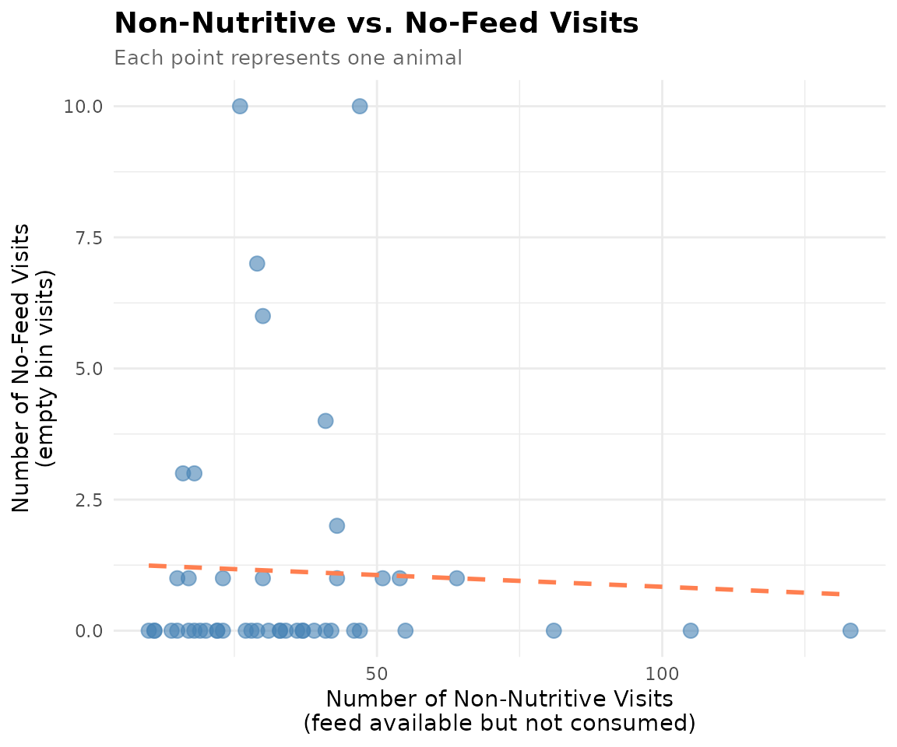

1. 🚨 Important: Set Your Global Variables First!
Before analyzing non-nutritive visit patterns, configure global variables to match your data structure:
# Configure global variables for your data structure
set_global_cols(
id_col = "cow", # Animal ID column name
start_col = "start", # Visit start time column
end_col = "end", # Visit end time column
bin_col = "bin", # Bin/feeder ID column
intake_col = "intake", # Feed intake amount column
dur_col = "duration", # Visit duration column
tz = "America/Vancouver" # Your timezone
)
# Verify configuration
cat("✅ Global variables configured:\n")
#> ✅ Global variables configured:
cat("ID column:", id_col2(), "\n")
#> ID column: cow
cat("Start time column:", start_col2(), "\n")
#> Start time column: start
cat("End time column:", end_col2(), "\n")
#> End time column: end
cat("Bin column:", bin_col2(), "\n")
#> Bin column: bin
cat("Intake column:", intake_col2(), "\n")
#> Intake column: intake
cat("Duration column:", duration_col2(), "\n")
#> Duration column: duration
cat("Timezone:", tz2(), "\n")
#> Timezone: America/Vancouver2. Introduction to Non-Nutritive Visits
🦦 Ollie the Otter explains: “Not every bin visit results in eating! Sometimes animals visit a feeder, see that feed is available, but choose not to eat. These are called non-nutritive visits. Understanding this behavior helps researchers identify selective feeding patterns, food preferences, and potential health issues.”
Non-nutritive visits can reveal important behavioral insights:
- Feed selectivity: Animals may reject certain feed types or quality
- Social dynamics: Animals may visit bins to assess feeding opportunities without committing
- Health monitoring: Changes in non-nutritive visit patterns may indicate illness or stress
- Resource competition: High non-nutritive visits may suggest animals are frequently displaced before they can eat
3. Prerequisites
This tutorial assumes completion of previous data processing steps in Tutorial 1: Data Cleaning
4. Data Preparation
# Load cleaned example data
data(clean_feed)
# If you're using your own data from previous tutorials, use this instead:
# clean_feed <- your_cleaned_feed_data # From your cleaning results
# Quick peek at our data structure
cat("Feed data structure:\n")
#> Feed data structure:
head(clean_feed[[1]], 3) # First day, first 3 rows
#> # A tibble: 3 × 11
#> transponder cow bin start end duration
#> <int> <int> <dbl> <dttm> <dttm> <dbl>
#> 1 12448407 6020 1 2020-10-31 00:26:12 2020-10-31 00:27:36 84
#> 2 11954014 4044 1 2020-10-31 01:17:43 2020-10-31 01:22:13 270
#> 3 11954042 4072 1 2020-10-31 01:37:30 2020-10-31 01:37:52 22
#> # ℹ 5 more variables: start_weight <dbl>, end_weight <dbl>, intake <dbl>,
#> # date <date>, rate <dbl>
cat("\nTotal days of data:", length(clean_feed), "\n")
#>
#> Total days of data: 2
cat("Number of animals on first day:", length(unique(clean_feed[[1]]$cow)), "\n")
#> Number of animals on first day: 475. Understanding Non-Nutritive Visits
A non-nutritive visit occurs when: - The animal visits a feeding bin - Feed is available in the bin (start weight > calibration error) - The animal consumes little or no feed (intake ≤ calibration error)
The calibration error is the measurement threshold below which values are considered zero due to equipment sensitivity (typically 0.5 kg for feed bins).
Calculate Non-Nutritive Visits
# Create quality control configuration with calibration error
my_qc_config <- qc_config(
calibration_error = 0.5 # Equipment measurement threshold (kg)
)
# Calculate non-nutritive visits for each animal on each day
non_nutritive <- calculate_non_nutritive_visits(
data = clean_feed, # Our cleaned feed data
cfg = my_qc_config # Configuration with calibration error
)
# Examine the first day's results
cat("Non-nutritive visits on first day:\n")
#> Non-nutritive visits on first day:
head(non_nutritive[[1]])
#> # A tibble: 6 × 2
#> cow number_of_non_nutritive_visits
#> <int> <int>
#> 1 2074 19
#> 2 3150 18
#> 3 4001 17
#> 4 4044 30
#> 5 4070 18
#> 6 4072 43
# Summary statistics
cat("\nSummary of non-nutritive visits (first day):\n")
#>
#> Summary of non-nutritive visits (first day):
summary(non_nutritive[[1]]$number_of_non_nutritive_visits)
#> Min. 1st Qu. Median Mean 3rd Qu. Max.
#> 10.00 19.50 30.00 35.38 42.50 133.006. Understanding No-Feed Visits
A no-feed visit (or empty bin visit) occurs when: - The animal visits a feeding bin - No feed is available in the bin (start weight ≤ calibration error) - The animal cannot consume anything (intake ≤ calibration error)
These visits indicate animals are checking bins that are already empty, which may reflect: - High feeding competition (bins emptied quickly) - Poor feed distribution timing - Exploration behavior
Calculate No-Feed Visits
# Calculate visits to empty bins for each animal on each day
no_feed <- calculate_no_feed_visits(
data = clean_feed, # Our cleaned feed data
cfg = my_qc_config # Configuration with calibration error
)
# Examine the first day's results
cat("No-feed visits on first day:\n")
#> No-feed visits on first day:
head(no_feed[[1]])
#> # A tibble: 6 × 2
#> cow number_of_visits_when_no_feed
#> <int> <int>
#> 1 4044 1
#> 2 4070 3
#> 3 4072 1
#> 4 4080 1
#> 5 5041 1
#> 6 5067 6
# Summary statistics
cat("\nSummary of no-feed visits (first day):\n")
#>
#> Summary of no-feed visits (first day):
summary(no_feed[[1]]$number_of_visits_when_no_feed)
#> Min. 1st Qu. Median Mean 3rd Qu. Max.
#> 1.000 1.000 1.500 3.312 4.500 10.0007. Comparing Non-Nutritive and No-Feed Patterns
Let’s combine both metrics to understand the full picture of feeding behavior:
# Combine non-nutritive and no-feed data for first day
combined_day1 <- non_nutritive[[1]] |>
dplyr::full_join(
no_feed[[1]],
by = "cow"
) |>
dplyr::mutate(
number_of_non_nutritive_visits = tidyr::replace_na(number_of_non_nutritive_visits, 0),
number_of_visits_when_no_feed = tidyr::replace_na(number_of_visits_when_no_feed, 0)
)
# Display animals with highest non-nutritive visits
cat("Animals with most non-nutritive visits (first day):\n")
#> Animals with most non-nutritive visits (first day):
combined_day1 |>
dplyr::arrange(dplyr::desc(number_of_non_nutritive_visits)) |>
head(5)
#> # A tibble: 5 × 3
#> cow number_of_non_nutritive_visits number_of_visits_when_no_feed
#> <int> <int> <int>
#> 1 7027 133 0
#> 2 7030 105 0
#> 3 5042 81 0
#> 4 5041 64 1
#> 5 6055 55 0
# Display animals with highest no-feed visits
cat("\nAnimals with most no-feed visits (first day):\n")
#>
#> Animals with most no-feed visits (first day):
combined_day1 |>
dplyr::arrange(dplyr::desc(number_of_visits_when_no_feed)) |>
head(5)
#> # A tibble: 5 × 3
#> cow number_of_non_nutritive_visits number_of_visits_when_no_feed
#> <int> <int> <int>
#> 1 5124 47 10
#> 2 6005 26 10
#> 3 6030 29 7
#> 4 5067 30 6
#> 5 7023 41 4Visualize the Relationship
# Create scatter plot showing relationship between visit types
ggplot(combined_day1, aes(x = number_of_non_nutritive_visits,
y = number_of_visits_when_no_feed)) +
geom_point(alpha = 0.6, size = 3, color = "steelblue") +
geom_smooth(method = "lm", se = FALSE, color = "coral", linetype = "dashed") +
labs(
title = "Non-Nutritive vs. No-Feed Visits",
subtitle = "Each point represents one animal",
x = "Number of Non-Nutritive Visits\n(feed available but not consumed)",
y = "Number of No-Feed Visits\n(empty bin visits)"
) +
theme_minimal() +
theme(
plot.title = element_text(face = "bold", size = 14),
plot.subtitle = element_text(size = 10, color = "gray40")
)
8. Temporal Patterns Across Days
Understanding how these patterns change over time can reveal important trends:
# Combine all days for temporal analysis
all_non_nutritive <- do.call(rbind, lapply(names(non_nutritive), function(date) {
non_nutritive[[date]] |>
dplyr::mutate(date = date)
}))
all_no_feed <- do.call(rbind, lapply(names(no_feed), function(date) {
no_feed[[date]] |>
dplyr::mutate(date = date)
}))
# Calculate daily averages
daily_summary <- all_non_nutritive |>
dplyr::group_by(date) |>
dplyr::summarize(
avg_non_nutritive = mean(number_of_non_nutritive_visits),
.groups = "drop"
) |>
dplyr::left_join(
all_no_feed |>
dplyr::group_by(date) |>
dplyr::summarize(
avg_no_feed = mean(number_of_visits_when_no_feed),
.groups = "drop"
),
by = "date"
)
cat("Daily averages across all animals:\n")
#> Daily averages across all animals:
print(daily_summary)
#> # A tibble: 2 × 3
#> date avg_non_nutritive avg_no_feed
#> <chr> <dbl> <dbl>
#> 1 2020-10-31 35.4 3.31
#> 2 2020-11-01 39.8 3.70Identify Most Selective Animals
# Calculate average non-nutritive visits per animal across all days
animal_selectivity <- all_non_nutritive |>
dplyr::group_by(cow) |>
dplyr::summarize(
avg_non_nutritive_visits = mean(number_of_non_nutritive_visits),
days_observed = dplyr::n(),
.groups = "drop"
) |>
dplyr::arrange(dplyr::desc(avg_non_nutritive_visits))
cat("🏆 TOP 5 MOST SELECTIVE ANIMALS (highest non-nutritive visits):\n")
#> 🏆 TOP 5 MOST SELECTIVE ANIMALS (highest non-nutritive visits):
head(animal_selectivity, 5)
#> # A tibble: 5 × 3
#> cow avg_non_nutritive_visits days_observed
#> <int> <dbl> <int>
#> 1 7027 118. 2
#> 2 7030 104 2
#> 3 5042 81.5 2
#> 4 6055 70 2
#> 5 6027 61 2
cat("\n🍽️ TOP 5 LEAST SELECTIVE ANIMALS (lowest non-nutritive visits):\n")
#>
#> 🍽️ TOP 5 LEAST SELECTIVE ANIMALS (lowest non-nutritive visits):
tail(animal_selectivity, 5)
#> # A tibble: 5 × 3
#> cow avg_non_nutritive_visits days_observed
#> <int> <dbl> <int>
#> 1 4070 17 2
#> 2 5114 16.5 2
#> 3 4001 16 2
#> 4 6129 15.5 2
#> 5 6042 15 29. Practical Interpretation
High Non-Nutritive Visits May Indicate:
- Feed quality issues: Animals rejecting poor-quality or unpalatable feed
- Feed selectivity: Animals preferring certain feed types or freshness
- Social displacement: Animals being pushed away before consuming adequate amounts
- Health concerns: Sick animals showing reduced appetite despite checking bins
High No-Feed Visits May Indicate:
- Inadequate feed supply: Bins frequently empty before all animals can eat
- Intense feeding competition: Dominant animals consuming available feed quickly
- Poor feeding management: Feed delivery timing not matching animal behavior patterns
- Exploration behavior: Animals actively searching for feeding opportunities
10. Summary
This tutorial demonstrated analysis of non-nutritive and no-feed visit patterns:
✅ Non-nutritive visits: Identified when animals visit bins with feed but don’t eat
✅ No-feed visits: Identified when animals visit empty bins
✅ Individual patterns: Analyzed which animals show highest selectivity
✅ Temporal trends: Examined how patterns change across days
These metrics provide valuable insights into feeding selectivity, resource competition, and potential welfare issues.
11. Code Cheatsheet
#' Copy and modify these code blocks for your own analysis!
# ---- SETUP: Global Variables (REQUIRED FIRST!) ----
library(moo4feed)
library(dplyr)
library(ggplot2)
# Set up your column names and timezone (modify these!)
set_global_cols(
id_col = "cow", # Your animal ID column
start_col = "start", # Visit start time column
end_col = "end", # Visit end time column
bin_col = "bin", # Bin/feeder ID column
intake_col = "intake", # Feed intake amount column
dur_col = "duration", # Visit duration column
tz = "America/Vancouver" # Your timezone
)
# ---- STEP 1: Load Your Data ----
# Use your own cleaned data from previous tutorials:
# clean_feed <- your_cleaned_feed_data
# ---- STEP 2: Create QC Configuration ----
my_qc_config <- qc_config(
calibration_error = 0.5 # Equipment measurement threshold (kg)
)
# ---- STEP 3: Calculate Non-Nutritive Visits ----
# Visits when feed is available but animal doesn't eat
non_nutritive <- calculate_non_nutritive_visits(
data = your_clean_feed, # Your cleaned feed data
cfg = my_qc_config, # QC configuration
id_col = id_col2(), # Animal ID column (default from global vars)
intake_col = intake_col2(), # Intake column (default from global vars)
start_weight_col = start_weight_col2() # Start weight column (default from global vars)
)
# ---- STEP 4: Calculate No-Feed Visits ----
# Visits when bin is empty (no feed available)
no_feed <- calculate_no_feed_visits(
data = your_clean_feed, # Your cleaned feed data
cfg = my_qc_config, # QC configuration
id_col = id_col2(), # Animal ID column (default from global vars)
intake_col = intake_col2(), # Intake column (default from global vars)
start_weight_col = start_weight_col2() # Start weight column (default from global vars)
)
# ---- STEP 5: Combine and Analyze Results ----
# For a specific day
day1_combined <- non_nutritive[[1]] |>
dplyr::full_join(no_feed[[1]], by = "cow") |>
dplyr::mutate(
number_of_non_nutritive_visits = tidyr::replace_na(number_of_non_nutritive_visits, 0),
number_of_visits_when_no_feed = tidyr::replace_na(number_of_visits_when_no_feed, 0)
)
# Identify most selective animals
most_selective <- day1_combined |>
dplyr::arrange(dplyr::desc(number_of_non_nutritive_visits)) |>
head(10)
# Animals checking empty bins most often
empty_bin_checkers <- day1_combined |>
dplyr::arrange(dplyr::desc(number_of_visits_when_no_feed)) |>
head(10)
# ---- STEP 6: Temporal Analysis Across Days ----
# Combine all days
all_non_nutritive <- do.call(rbind, lapply(names(non_nutritive), function(date) {
non_nutritive[[date]] |>
dplyr::mutate(date = date)
}))
all_no_feed <- do.call(rbind, lapply(names(no_feed), function(date) {
no_feed[[date]] |>
dplyr::mutate(date = date)
}))
# Calculate daily averages
daily_summary <- all_non_nutritive |>
dplyr::group_by(date) |>
dplyr::summarize(
avg_non_nutritive = mean(number_of_non_nutritive_visits),
.groups = "drop"
) |>
dplyr::left_join(
all_no_feed |>
dplyr::group_by(date) |>
dplyr::summarize(
avg_no_feed = mean(number_of_visits_when_no_feed),
.groups = "drop"
),
by = "date"
)
# Calculate per-animal averages across all days
animal_selectivity <- all_non_nutritive |>
dplyr::group_by(cow) |>
dplyr::summarize(
avg_non_nutritive_visits = mean(number_of_non_nutritive_visits),
days_observed = dplyr::n(),
.groups = "drop"
) |>
dplyr::arrange(dplyr::desc(avg_non_nutritive_visits))
# ---- STEP 7: Visualization ----
# Scatter plot of visit types
ggplot(day1_combined, aes(x = number_of_non_nutritive_visits,
y = number_of_visits_when_no_feed)) +
geom_point(alpha = 0.6, size = 3, color = "steelblue") +
geom_smooth(method = "lm", se = FALSE, color = "coral", linetype = "dashed") +
labs(
title = "Non-Nutritive vs. No-Feed Visits",
x = "Non-Nutritive Visits (feed available, not consumed)",
y = "No-Feed Visits (empty bin)"
) +
theme_minimal()🦦 Ollie’s Final Words: “Remember, non-nutritive visits aren’t always bad! They’re natural exploration behavior. However, sudden increases in non-nutritive visits across many animals might signal feed quality issues or health concerns worth investigating.”
Next Steps: Use these metrics alongside other behavioral measures (from previous tutorials) to build a comprehensive picture of animal welfare and feeding patterns! 🍽️✨